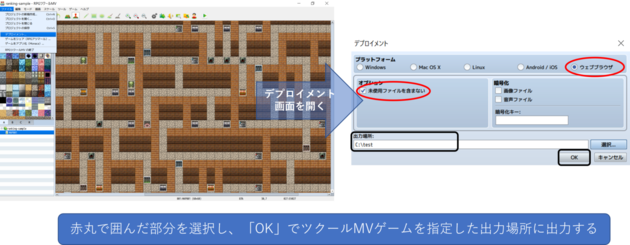

『RPGツクールMV』で作成されたゲームをニコ生ゲームに変換するツールです。 ダウンロードボタンでzip化されたニコ生ゲームをダウンロードできます。 「ツクールMVプラグイン変換機能を使う」にチェックを入れると、非サポートプラグインもニコ生ゲーム上で動くように変換処理が行われます(ただし、プラグインが正常に動作しないこともあります。その場合はチェックを外して再度変換処理を行ってください)。
ここに ツクールMVゲームの配布用ファイルをドラッグ＆ドロップしてください。
ツクールMVプラグイン変換機能を使う(試作版)
